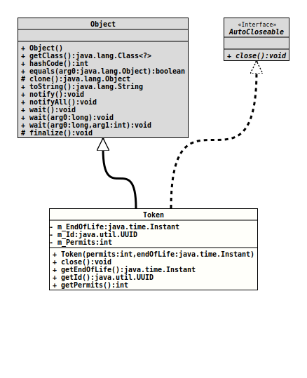

Module org.tquadrat.foundation.util
Class TimeoutSemaphoreImpl.Token
java.lang.Object
org.tquadrat.foundation.util.internal.TimeoutSemaphoreImpl.Token
- All Implemented Interfaces:
AutoCloseable
- Enclosing class:
TimeoutSemaphoreImpl
@ClassVersion(sourceVersion="$Id: TimeoutSemaphoreImpl.java 1136 2024-05-30 18:25:38Z tquadrat $")
@API(status=INTERNAL,
since="0.4.8")
private final class TimeoutSemaphoreImpl.Token
extends Object
implements AutoCloseable
The token that holds the permits to be released when a
try-with-resources block is left or the timeout has
expired.
- Author:
- Thomas Thrien (thomas.thrien@tquadrat.org)
- Version:
- $Id: TimeoutSemaphoreImpl.java 1136 2024-05-30 18:25:38Z tquadrat $
- Since:
- 0.4.8
- UML Diagram
-

UML Diagram for "org.tquadrat.foundation.util.internal.TimeoutSemaphoreImpl.Token"
{kind=link}
-
Field Summary
Fields -
Constructor Summary
Constructors -
Method Summary
-
Field Details
-
m_EndOfLife
The end-of-life for this permit. -
m_Id
The id for this permit. -
m_Permits
The number of permits to release on close.
-
-
Constructor Details
-
Token
Creates a new instance ofToken.- Parameters:
permits- The number of the acquired permits.endOfLife- The end-of-life for this permit.
-
-
Method Details
-
close
- Specified by:
closein interfaceAutoCloseable- Throws:
Exception
-
getEndOfLife
Returns the time for the end-of-life.- Returns:
- The end-of-life instant.
-
getId
Returns the id of the token.- Returns:
- The id.
-
getPermits
Returns the number of permits for this token.- Returns:
- The number of permits.
-